| InvoiceNo | StockCode | Description | Quantity | InvoiceDate | UnitPrice | CustomerID | Country |
|---|---|---|---|---|---|---|---|
| 536365 | 85123A | WHITE HANGING HEART T-LIGHT HOLDER | 6 | 1/12/10 8:26 | 2,55 | 17850 | United Kingdom |
| 536365 | 71053 | WHITE METAL LANTERN | 6 | 1/12/10 8:26 | 3,39 | 17850 | United Kingdom |
| 536365 | 84406B | CREAM CUPID HEARTS COAT HANGER | 8 | 1/12/10 8:26 | 2,75 | 17850 | United Kingdom |
| 536365 | 84029G | KNITTED UNION FLAG HOT WATER BOTTLE | 6 | 1/12/10 8:26 | 3,39 | 17850 | United Kingdom |
| 536365 | 84029E | RED WOOLLY HOTTIE WHITE HEART. | 6 | 1/12/10 8:26 | 3,39 | 17850 | United Kingdom |
Session 05: Sales Analysis Dashboard
Advanced Dashboards | 1
tableau
In the comming two sessions we are going to build solid dashboards first of all to enrich our portfolio and obtain advanced dashboard development skills.
Dashboard Goal
The purpose of this dashboard is to analyze retail business performance using:
- Sales trends
- Customer behavior
- Product performance
- Segmentation
- Geographic analysis
- Time-based purchasing behavior
The dashboard should help business users answer:
- Are sales increasing over time?
- Which products generate the highest revenue?
- Which countries generate the most sales?
- Which weekday and time hour generates the most sales?
- Revenue vs Product
The dashboard should feel:
- Modern
- Minimalistic
- Executive-level
- Professional
- Presentation-ready
Dataset Overview
The Tableau workbook contains multiple analytical worksheets focused on retail performance analysis.
Main analytical areas include:
| Analysis Area | Business Purpose |
|---|---|
| KPI Section | High-level business overview |
| Sales Trend | Revenue trend analysis |
| Geographic Analysis | Country-level sales analysis |
| Product Performance | Best-selling product analysis |
| Time Analysis | Purchase behavior analysis |
Dashboard Structure
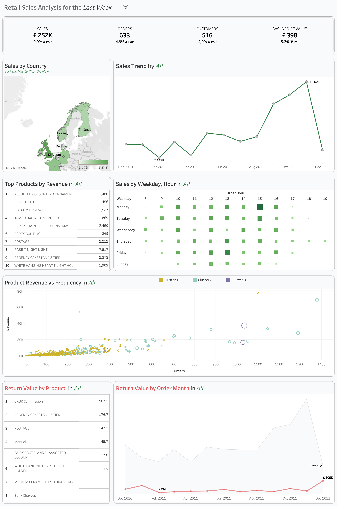
Recommended Dashboard Size
| Element | Recommendation |
|---|---|
| Dashboard Size | 1400 × 900 |
| Layout | Tiled |
| Device Layout | Desktop |
| Outer Padding | 20–30 px |
| Space Between Containers | 10–20 px |
A fixed dashboard size helps maintain alignment consistency and improves presentation quality.
Dashboard Visual Hierarchy
The dashboard should follow a clear visual hierarchy.
The user should first see:
- KPI Section
- Sales Trends
- Geographic Analysis
- Product Analysis
The layout should naturally guide the user from summary insights into deeper analytical exploration.
Step 0 | Calculated Fields and Parameters
Period
We need this, order to be able effectively analyzie sales by any predifined period first we need to create a Parameter named Period
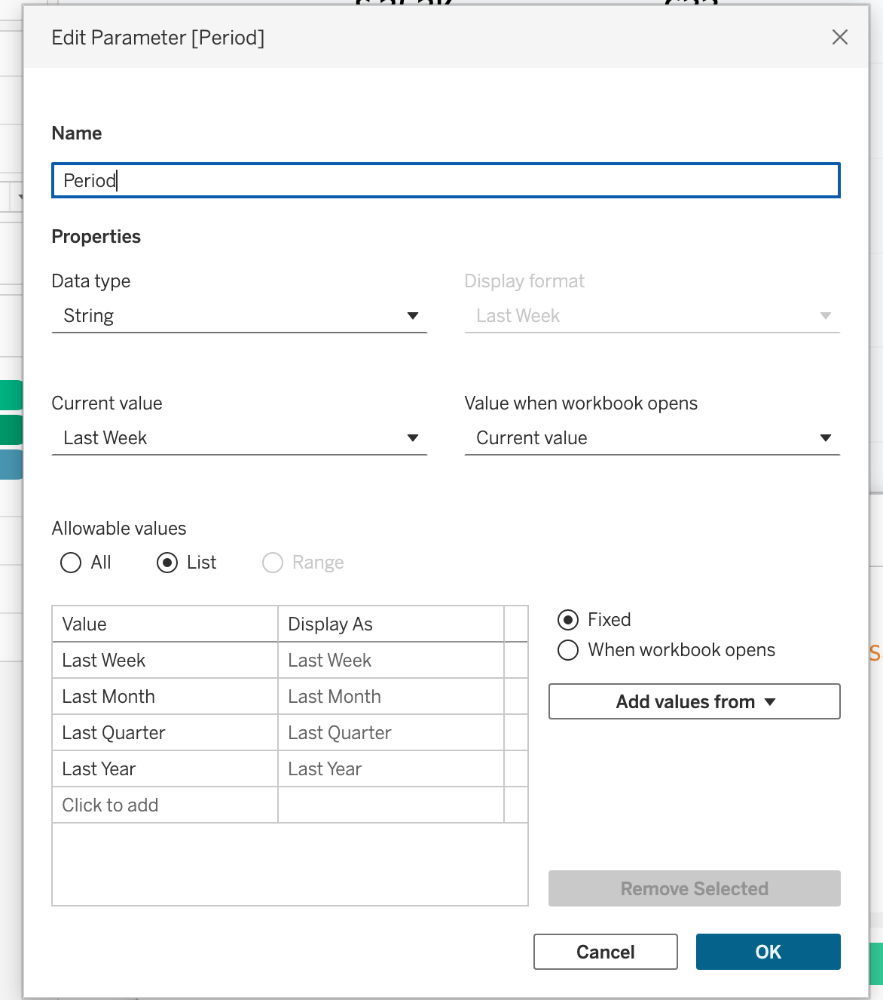
Once we have this, we can create the following metrics:
Current Period OrdersCurrent Period AVG InvoiceCurrent Period CustomersCurrent Period Sales
Is Canceled
This is useful because some invoice numbers may be stored as numbers, while cancelled invoices contain a letter such as C536379
C means cancelled and we need to filter out them from further calculation, unless we are explicitly analyzing cancelled orders.
LEFT(STR([Invoice No]),1) = "C"Valid Sale
Filter variable to test:
NOT [Is Cancelled]
AND [Quantity] > 0
AND [Unit Price] > 0
AND NOT ISNULL([Customer ID])We need this in order to clean the table
Max Order Date
We need this in order to figure out the latest invoice date.
{ FIXED : MAX(DATE([Invoice Date])) }Remember the RFM analysis
Sales
[Unit Price]* [Quantity]Step 1 | KPI Section
Purpose of KPI Section
The KPI section provides an instant overview of overall business health.
The KPI cards should be positioned at the top of the dashboard because they establish the business context before deeper analysis begins.
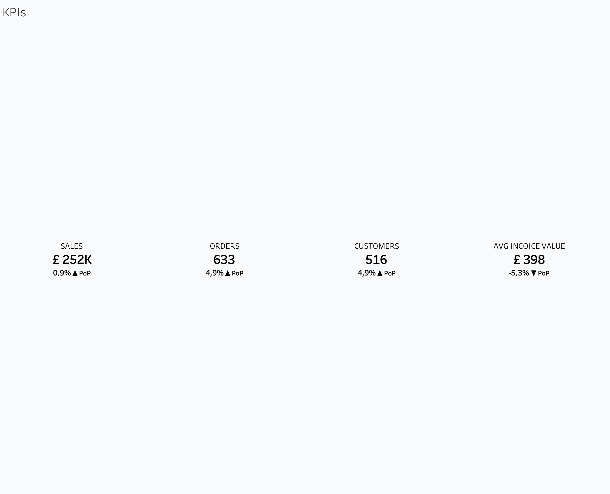
We need to create 16 new calculated fields in meaning that for Sales, Customers, Orders, Avg Invoice we need
Recommended KPIs
| KPI | Business Meaning |
|---|---|
| Total Revenue | Total generated sales |
| Total Orders | Number of transactions |
| Total Customers | Unique customer count |
| AVG Revenue per Customer | Customer value |
| Growth % | Performance comparison |
Recommended KPI Layout
flowchart LR
A[Revenue KPI]
B[Orders KPI]
C[Customers KPI]
D[AVG Revenue KPI]
A --> B
B --> C
C --> D
KPI Card Design Rules
Each KPI card should contain:
- Large KPI value
- KPI subtitle
- Growth percentage
- Previous period comparison
- Directional indicator
The KPI value should always be visually dominant.
Entire View & Format
Choose the Entire View and navigate to the format sellect borders and change everything into None, as shown in the file.
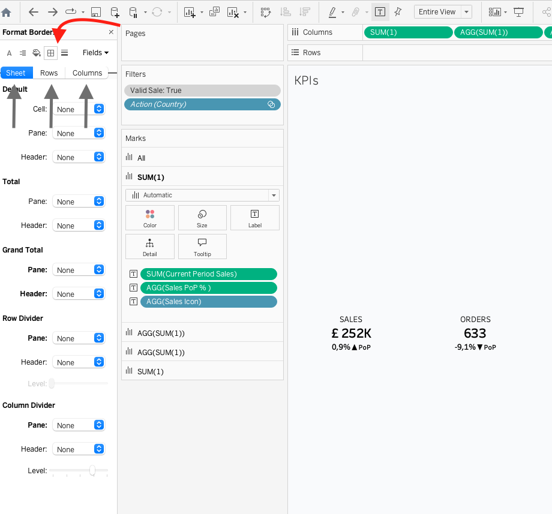
Currency
Right Click on the numbers choose the respective fields and choose the required currency.
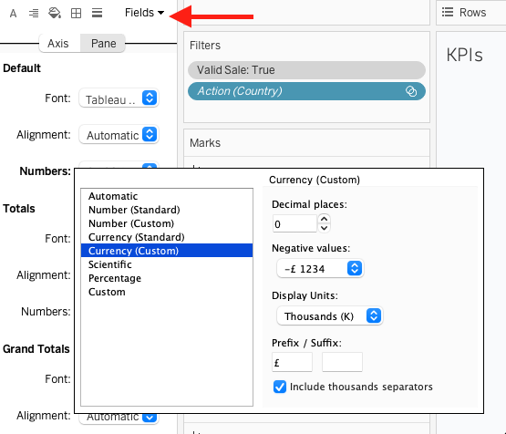
KPI Color Rules
| Situation | Color |
|---|---|
| Positive Growth | Green |
| Negative Growth | Red |
| Neutral | Gray |
Use directional arrows to reinforce performance visually.
KPI Card Size Recommendations
| Element | Recommendation |
|---|---|
| Width | 240–280 px |
| Height | 120–150 px |
| Inner Padding | 10–15 px |
| Space Between Cards | 15–20 px |
All KPI cards should maintain identical sizing for visual consistency.
Recommended Typography Hierarchy
| Element | Font Size | Weight |
|---|---|---|
| Dashboard Title | 24–32 px | Bold |
| Section Titles | 16–20 px | Semi-bold |
| KPI Values | 28–40 px | Bold |
| KPI Labels | 10–14 px | Regular |
| Growth % | 12–16 px | Semi-bold |
Try within the above mentioned sizing.
Recommended Tableau Fonts
| Font | Usage |
|---|---|
| Tableau Book | Default dashboard text |
| Tableau Medium | KPI values and titles |
| Arial | Universal readability |
| Verdana | Small dashboard labels |
Step 2 | Sales Trend Analysis
Purpose of Sales Trend Chart
The Sales Trend chart helps users understand how business performance changes over time.
This is usually the primary analytical chart after the KPI section.
The chart should help users identify:
- Growth trends
- Declines
- Seasonality
- Performance spikes
- Long-term business direction
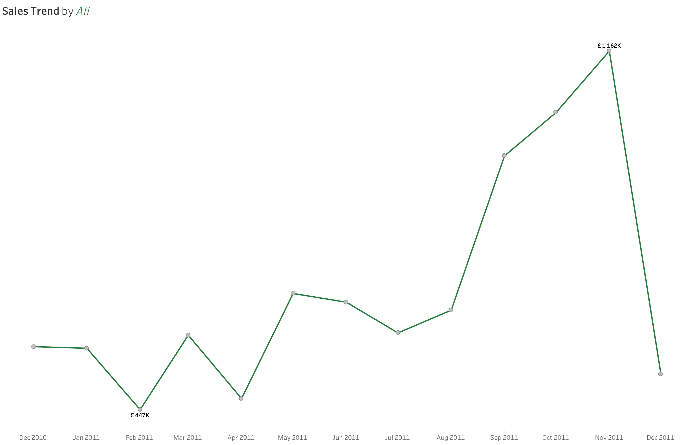
Sales Trend Design Rules
Do:
- Highlight latest point
- Use minimal gridlines
- Use one dominant color
- Keep labels minimal
- Maintain smooth visual flow
Avoid:
- Too many colors
- Heavy formatting
- Excessive labels
- Too many trend lines
Recommended Sales Trend Styling
| Element | Recommendation |
|---|---|
| Line Width | Medium |
| Gridlines | Soft |
| Labels | Minimal |
| Colors | Single dominant color |
Dual Axis Design
Right click on the axis and choose dual axis
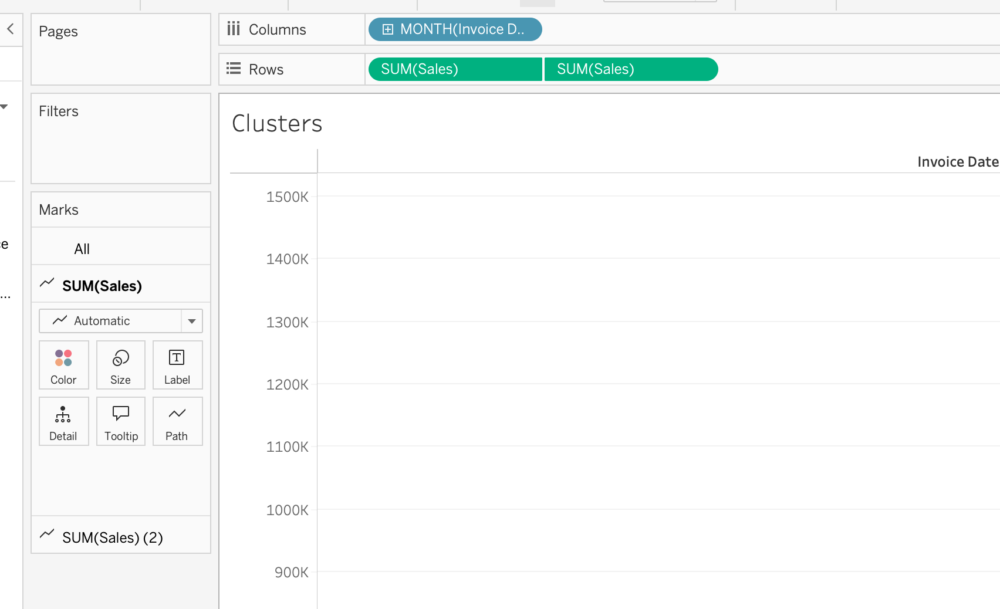
Show Marks
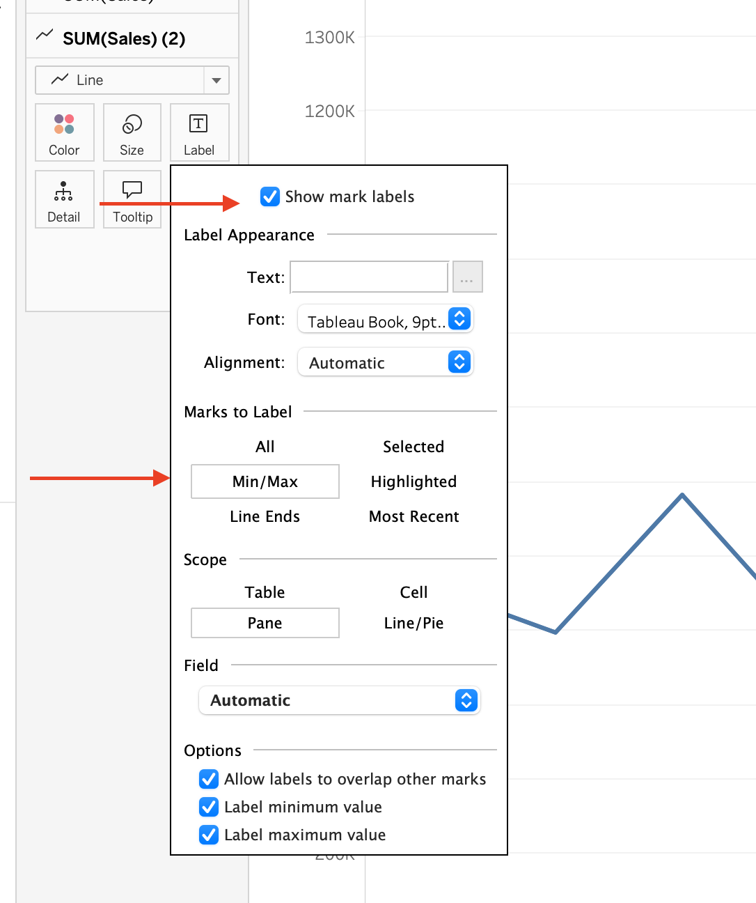
Borders
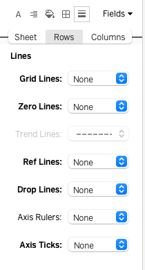
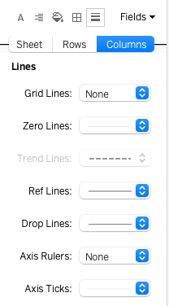
Step 3 | Geographic Analysis
Purpose of Geographic Analysis
The geographic analysis section helps users identify which countries or regions generate the highest revenue.
This analysis helps answer:
- Which markets perform best?
- Which regions need attention?
- Where are business opportunities concentrated?
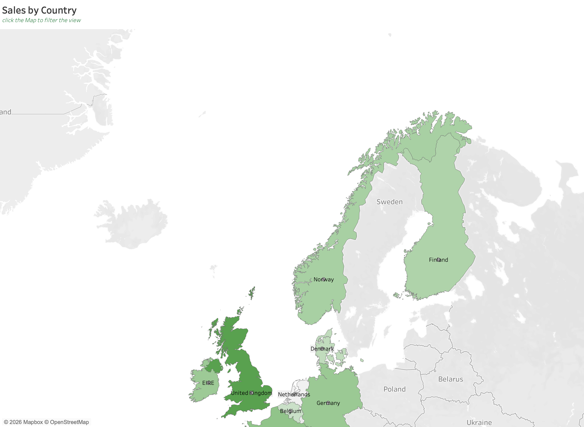
Geographic Analysis Design Rules
If using maps:
- Use soft color gradients
- Highlight key regions
- Keep labels minimal
If using bars:
- Sort descending
- Show regional contribution %
Maps should support analysis rather than decoration.
Calculated Fields
valid_date
To validate the filter
IF [Period] = "Last Week" THEN
DATEDIFF('week', [Invoice Date], { MAX([Invoice Date]) }) = 1
ELSEIF [Period] = "Last Month" THEN
DATEDIFF('month', [Invoice Date], { MAX([Invoice Date]) }) = 1
ELSEIF [Period] = "Last Quarter" THEN
DATEDIFF('quarter', [Invoice Date], { MAX([Invoice Date]) }) = 1
ELSEIF [Period] = "Last Year" THEN
DATEDIFF('year', [Invoice Date], { MAX([Invoice Date]) }) = 1
ENDvalid_sale
To validate the filter
NOT [is canceled]
AND [Quantity] > 0
AND [Unit Price] > 0
AND NOT ISNULL([Customer ID])Log Sales
In order to kind of zoom-in the differences there might be a need to use logarithmic scale
LOG(SUM([Sales]))AS we can see the highest generated sales belong to the United Kingdom
Visualization Steps
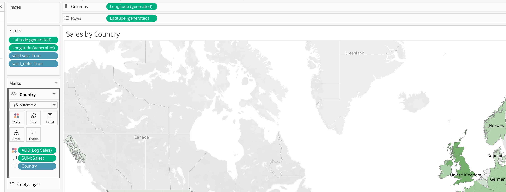
Note
Remember the effect of the logarithmic scale is to zoom in in order to see the difference more explicitly
Step 4 | Product Performance Analysis
Purpose of Product Analysis
The product section identifies:
- Best-selling products
- Low-performing products
- Revenue contribution
- Product demand
This section helps stakeholders identify opportunities and risks quickly.
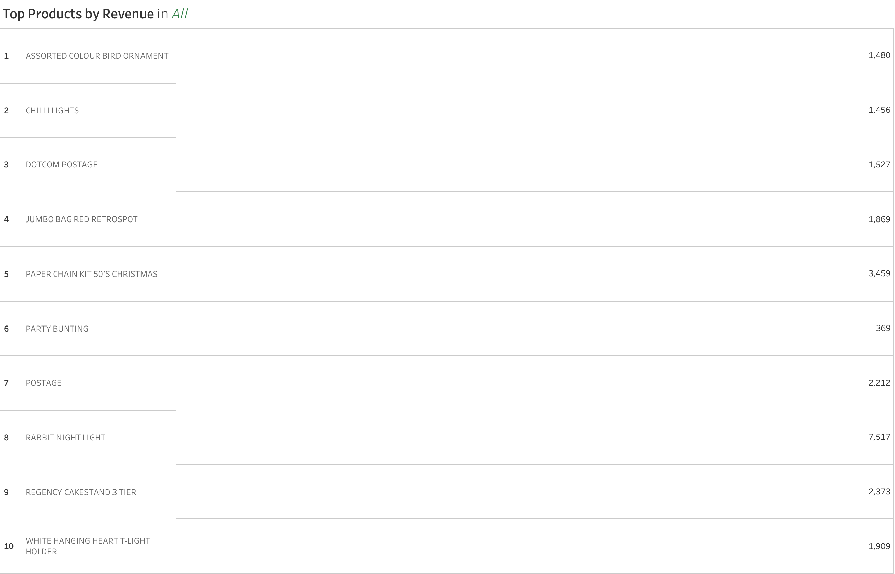
Calculated Field
Index
Here we can also create an index column in order follow properly
INDEX()Product Analysis Design Rules
Do:
- Sort descending
- Highlight top products
- Keep labels readable
- Use consistent colors
Avoid:
- Too many products displayed
- Tiny unreadable labels
- Excessive color variations
Table Construction Steps
Filters

Marks
SUM(Sales)Format
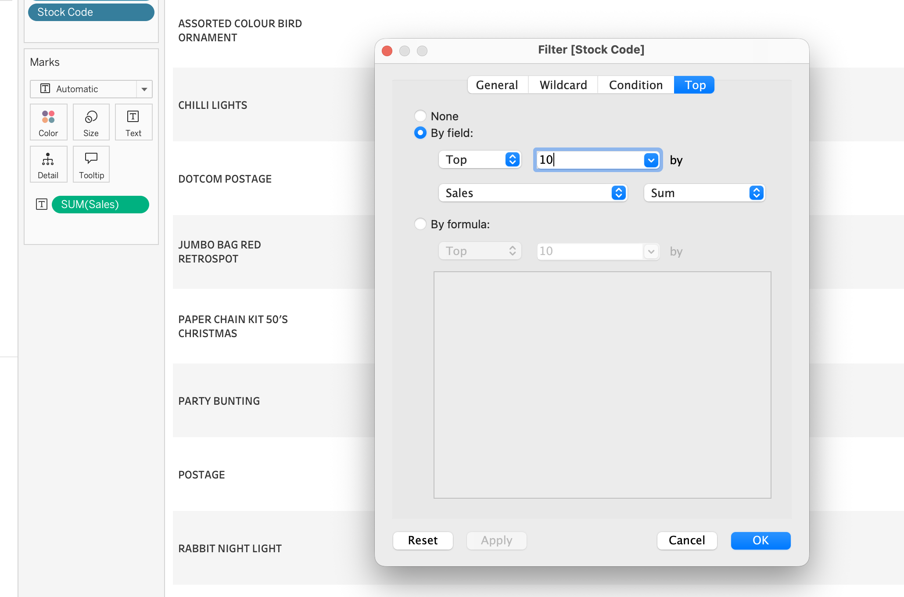
Step 5 | Sales By Weekday, Hour
Purpose of Time Analysis
This section helps identify purchasing behavior patterns.
Possible analyses:
- Sales by Weekday
- Sales by Hour
- Peak purchasing periods
Recommended Chart Types
Use:
- Heatmaps
- Line Charts
- Bar Charts
Calculated Fields
In order to be able to build the graph first wee need to create the following calculated fields:
Order HourWeekday
Order Hour
DATEPART('hour',[Invoice Date])Order Weekday
DATENAME('weekday',[Invoice Date])Step 7 | Clustering
Purpose of Clustering
Automatically splits the data into multiple clusters.
Navigate to Analytic \(\rightarrow\) Cluster \(\rightarrow\) drag into cluster
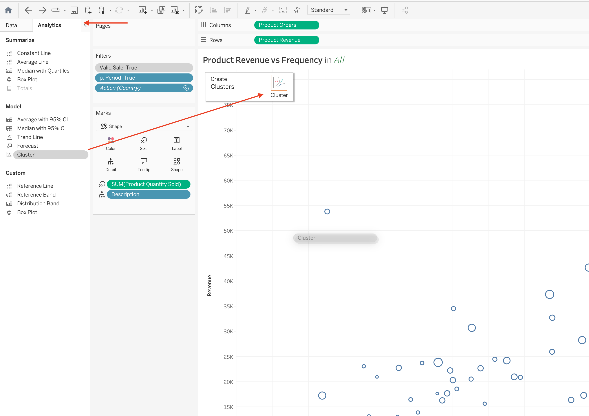
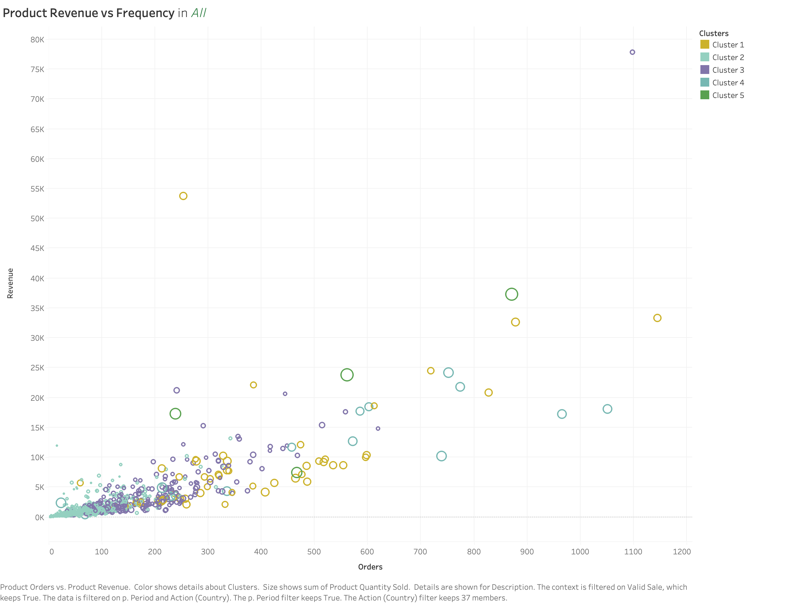
Calculated Fields
Here wee need to add RFM components in order to visualize, for the comming dashboard we will add a new representation for the calculated field.
Product OrdersProduct RevenueProduct Quantity Sold
Product Orders
{ FIXED [Stock Code]: COUNTD([Invoice No]) }Explain the decision for applying
COUNTD
Product Quantity Sold
{ FIXED [Stock Code] : SUM([Quantity]) }Product Revenue
{ FIXED [Stock Code] : SUM([Sales]) }Visualzing
Drag Product Orders and Product Quantity Sold part into Columns and Rows
right click on the column → dimansion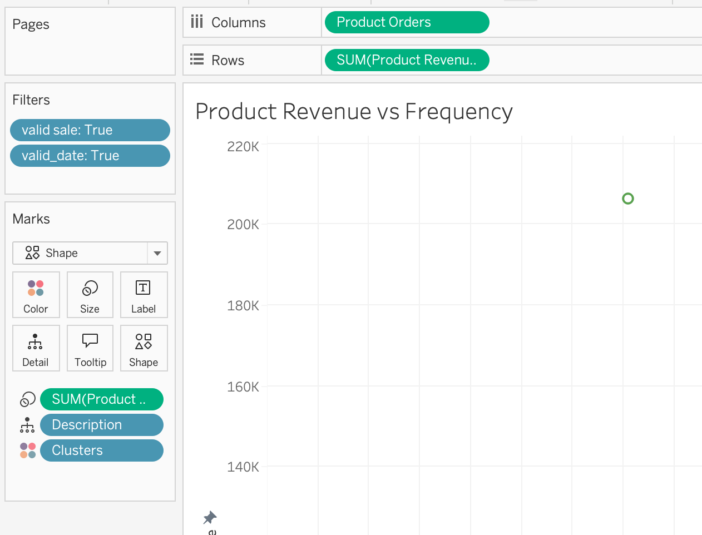
Video
Checkout the following video
Step 8 | Return Value by Order Month
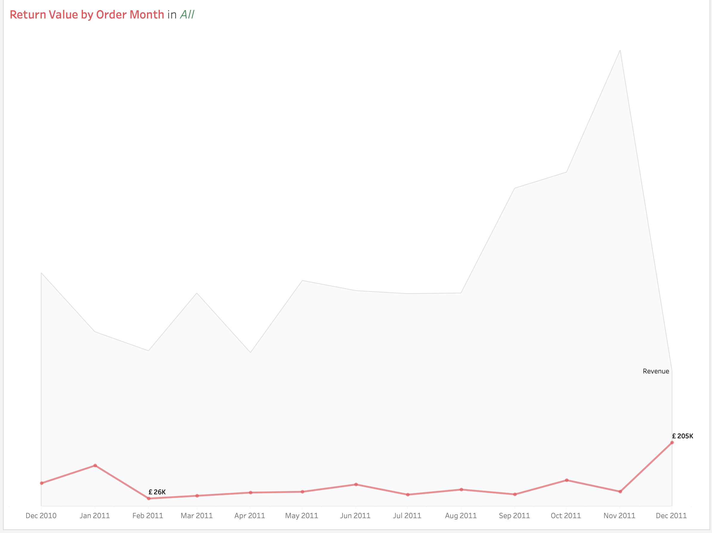
Calculated Fields
RevenueReturn Value
Note
We have the same as filed named Sales as well, I did so simply to train yourself :)
Revenue
[Quantity] * [Unit Price]Return Value
IF [Quantity] < 0 THEN ABS([Quantity] * [Unit Price]) ENDFinal Results
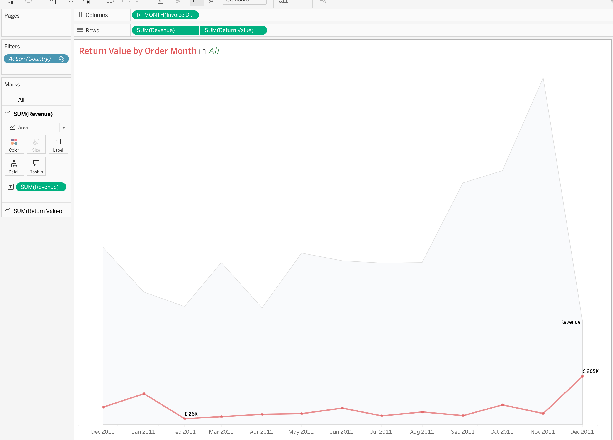
Step 9 | Retrun Value By Product
Similar to the above case
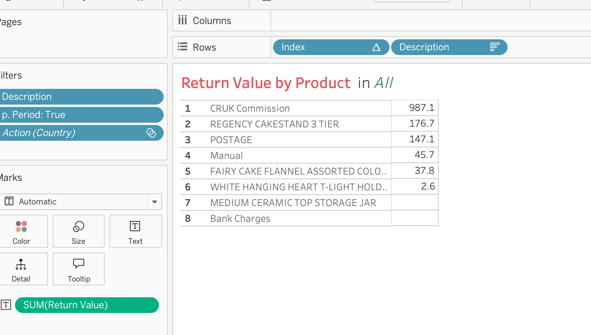
Step 10 | Dashboard Development
Container Structure
flowchart TB A[Main Vertical Container] A --> B[KPI Horizontal Container] A --> C[Middle Analytics Section] A --> D[Bottom Supporting Charts] C --> E[Sales Trend] C --> F[Geographic Analysis] C --> G[Product Analysis]
Dashboard Design Principles
A professional dashboard should:
- Guide user attention
- Prioritize important insights
- Reduce clutter
- Maintain spacing consistency
- Support storytelling
- Simplify decision-making
The dashboard should feel analytical and structured rather than visually crowded.
Common Dashboard Mistakes
Avoid:
- Too many chart types
- Excessive colors
- Tiny labels
- Misaligned containers
- Heavy borders
- Decorative visualizations
- Overcrowded layouts
Every dashboard element should have a clear analytical purpose.
Final Dashboard Checklist
Before publishing:
- KPI section visually dominant
- Charts aligned properly
- Colors consistent
- Font hierarchy clear
- Filters functional
- Tooltips readable
- Interactions working
- Dashboard spacing balanced
- Storytelling understandable
- Dashboard presentation-ready
Resources
GitHub
Tableau Course Code Repository for this session is available in the GitHub repository linked above. It includes:
- Tableau workbook with all examples
- Sample datasets